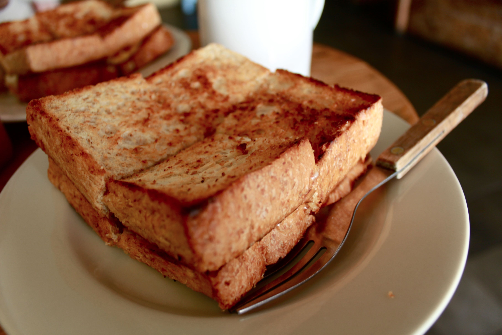

MAKANAN TRADISIONAL
Seblak Kuah

Seblak adalah makanan Indonesia yang dikenal berasal dari Bandung, Jawa Barat dengan cita rasa gurih dan pedas.
Terbuat dari kerupuk basah yang dimasak dengan sayuran dan sumber protein seperti telur, ayam, boga bahari, atau
olahan daging sapi, dan dimasak dengan kencur.
Seblak kini menjadi makanan jajanan jalanan yang digemari berbagai kalangan masyarakat, terutama di Jawa Tengah
dan Jawa Barat.
Seiring berkembangnya tren jajanan tradisional dan kaki lima, seblak tidak hanya disajikan dengan toping biasa
di gerobak.
Seblak berkembang menjadi makanan yang modern dan berhasil menarik perhatian.
Makanan yang bertekstur kenyal ini memiliki rasa yang pedas dan menyegarkan, serta memiliki beberapa variasi,
baik rasa maupun bahan tambahan juga kemasan penjualan.
Soto Bandung
Soto Bandung adalah soto khas Bandung, Jawa Barat.
Sepintas, soto yang berbahan dasar daging sapi (biasanya bagian tetelan atau has dalam) ini hampir sama dengan
jenis soto yang lain, tetapi yang membuatnya berbeda adalah adanya tambahan lobak, tomat, dan kedelai goreng di
dalamnya.
Soto tanpa santan ini biasa disantap dengan nasi dan kerupuk.
Roti Gempol

Jika sedang tak ingin makan berat, Roti Gempol bisa jadi jujugan tepat untuk ngemil. Tempat yang jadikan roti bakar sebagai menu utama ini sudah sangat terkenal di seantero Bandung.
Hadir sejak 1958, kedai Roti Gempol miliki cita rasa khas yang terus konsisten selama beberapa dekade. Tak heran pelanggannya kini sudah ratusan. Saking banyaknya, kalian harus rela antre panjang jika ingin mencicipi kenikmatannya, terlebih di jam-jam sibuk.
Karedok

Karedok atau keredok adalah salah satu makanan khas Sunda di Indonesia.
Karedok dibuat dengan bahan-bahan sayuran mentah antara lain; mentimun, taoge, kol, kacang panjang, ubi, daun
kemangi, dan terong atau leunca.
Sedangkan sausnya adalah bumbu kacang yang dibuat dari cabai merah, bawang putih, kencur, kacang tanah, air
asam, gula jawa, garam, dan terasi.
Salah satu ciri dari karedok adalah menggunakan oncom bakar. Bila tidak menggunakan oncom bakar disebutnya lotek
mentah (atah).
Karedok biasanya menjadi makanan pelengkap dalam menu sehari-hari orang Sunda.
Panada

Panada adalah salah satu kue khas Manado yang populer selain klappertaart.
Ada yang mengatakan kue ini merupakan pengaruh kuliner Belanda, ada yang mengatakan kue ini merupakan pengaruh
kuliner Portugis karena bentuknya yang mirip kue pastel.
Akan tetapi, diyakini kue ini merupakan pengaruh kuliner Spanyol karena sangat mirip dengan kue Empanada.
Kue ini seperti roti goreng / donat (yang membedakan adalah penggunaan santan sebagai pengganti air dalam proses
pembuatannya),
yang diisi dengan ikan laut cakalang dibumbu pampis. Bumbu pampis adalah ikan cakalang dimasak dengan bawang
merah, daun jeruk, kemangi, cabe merah, daun bawang, sedangkan ikannya disuir kecil-kecil.
Pembuatan panada terdiri atas bahan dan isi, kemudian digoreng dalam minyak hangat.